Il Colore del Sole is a contemporary opera by Lucio Gregoretti, based on the novel by Andrea Camilleri (2007), which imagines the discovery of a secret diary written by Caravaggio — Michelangelo Merisi — during his tumultuous final years between Naples, Malta, Sicily and the flight towards Rome.
Cristian Taraborrelli signs the direction and set design for the world premiere at the XVII Festival Pergolesi Spontini in Jesi (September 2017), later reprised at the Teatro Pavarotti in Modena (October 2017). The staging transforms Caravaggio’s paintings into a living, immersive environment through video projections by Fabio Massimo Iaquone, guiding the audience through the fears and dark recesses of the painter’s psyche.
Il Colore del Sole è un’opera contemporanea di Lucio Gregoretti, tratta dal romanzo di Andrea Camilleri (2007), che immagina la scoperta di un diario segreto scritto da Caravaggio — Michelangelo Merisi — durante i suoi tumultuosi ultimi anni tra Napoli, Malta, la Sicilia e la fuga verso Roma.
Cristian Taraborrelli firma la regia e la scenografia per la prima esecuzione al XVII Festival Pergolesi Spontini di Jesi (settembre 2017), poi ripresa al Teatro Pavarotti di Modena (ottobre 2017). La messa in scena trasforma i dipinti di Caravaggio in un ambiente vivente e immersivo attraverso le videoproiezioni di Fabio Massimo Iaquone, guidando il pubblico nelle paure e nei meandri oscuri della psiche del pittore.
Il Colore del Sole est un opéra contemporain de Lucio Gregoretti, d’après le roman d’Andrea Camilleri (2007), qui imagine la découverte d’un journal secret écrit par Le Caravage — Michelangelo Merisi — durant ses tumultueuses dernières années entre Naples, Malte, la Sicile et la fuite vers Rome.
Cristian Taraborrelli signe la mise en scène et la scénographie pour la création au XVII Festival Pergolesi Spontini à Jesi (septembre 2017), reprise au Teatro Pavarotti de Modène (octobre 2017). La mise en scène transforme les tableaux du Caravage en un environnement vivant et immersif grâce aux vidéoprojections de Fabio Massimo Iaquone.
La Visione
Taraborrelli’s staging concept starts from the premise that Caravaggio’s paintings — with their violent chiaroscuro, their dramatic use of light cutting through darkness — are themselves theatrical sets. The set design reverses the perspective: rather than recreating period environments, it projects Caravaggio’s canvases as living, breathing video surfaces that envelop the performers, turning the entire stage into a painting in motion.
The instrumental ensemble of eight musicians is placed on stage, becoming part of the visual composition — amplifying the atmosphere and allowing the audience to perceive the painter’s anxieties as living sound. The result is a total work where music, image and body merge in a contemporary reading of the Baroque master’s tortured genius.
Il concept registico di Taraborrelli parte dalla premessa che i dipinti di Caravaggio — con il loro violento chiaroscuro, il loro uso drammatico della luce che taglia l’oscurità — sono essi stessi scenografie teatrali. La messa in scena ribalta la prospettiva: invece di ricreare ambienti d’epoca, proietta le tele di Caravaggio come superfici video viventi e pulsanti che avvolgono gli interpreti, trasformando l’intero palcoscenico in un dipinto in movimento.
L’ensemble strumentale di otto musicisti è posizionato sulla scena, diventando parte della composizione visiva — amplificando l’atmosfera e permettendo al pubblico di percepire le ansie del pittore come suono vivente. Il risultato è un’opera totale dove musica, immagine e corpo si fondono in una lettura contemporanea del genio tormentato del maestro barocco.
Le concept de mise en scène de Taraborrelli part du principe que les tableaux du Caravage — avec leur violent clair-obscur, leur usage dramatique de la lumière perçant les ténèbres — sont eux-mêmes des scénographies théâtrales. La mise en scène renverse la perspective : plutôt que de recréer des décors d’époque, elle projette les toiles du Caravage comme des surfaces vidéo vivantes qui enveloppent les interprètes, transformant la scène entière en un tableau en mouvement.
L’ensemble instrumental de huit musiciens est placé sur scène, devenant partie intégrante de la composition visuelle — amplifiant l’atmosphère et permettant au public de percevoir les angoisses du peintre comme un son vivant.
Foto — Teatro Pergolesi, Jesi
Ph. Binci Fotografia · XVII Festival Pergolesi Spontini
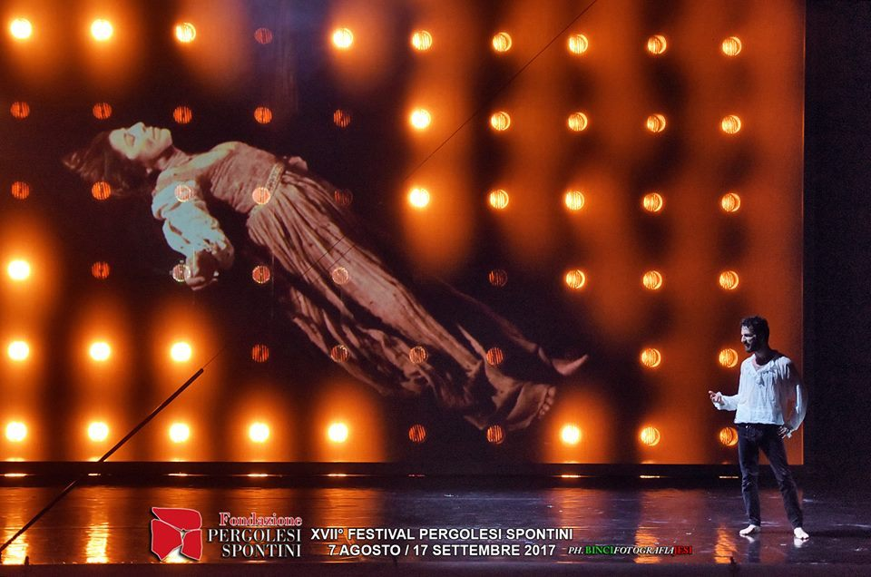
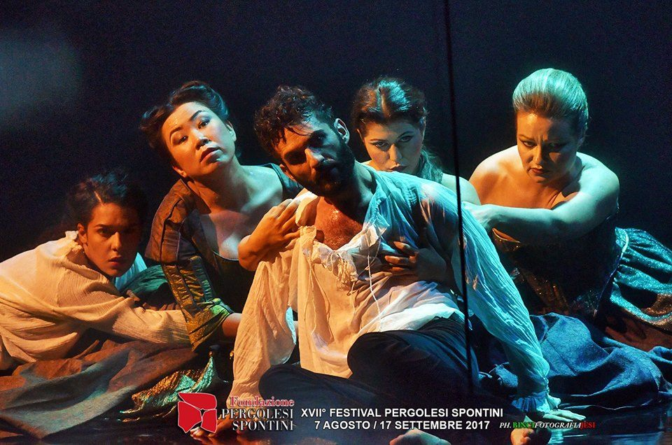
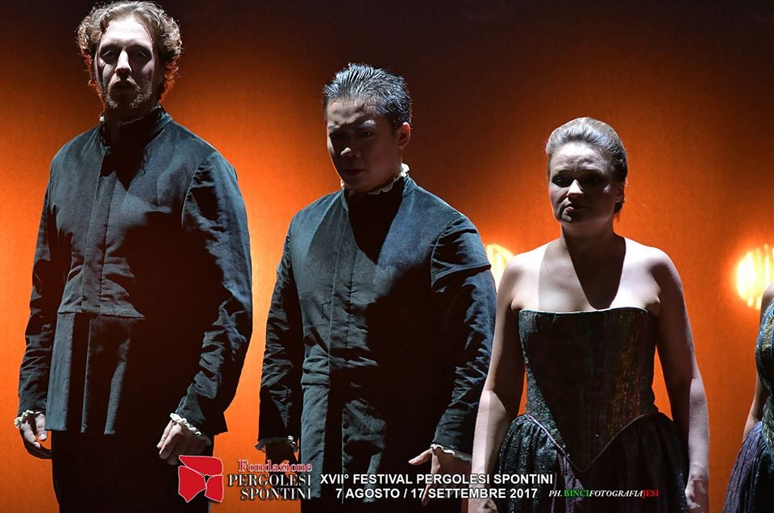
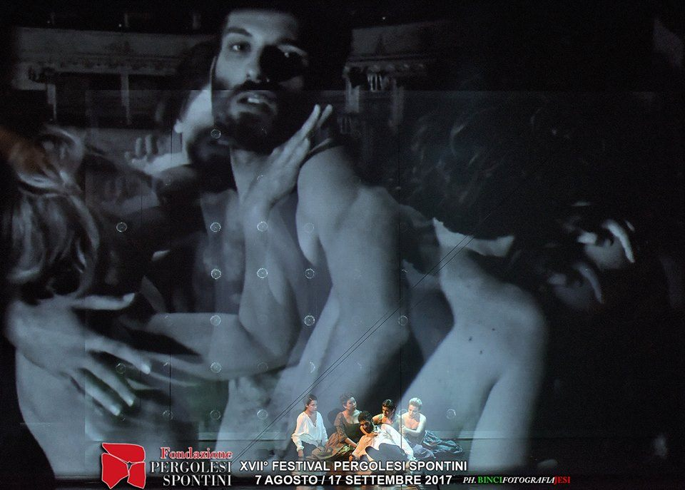
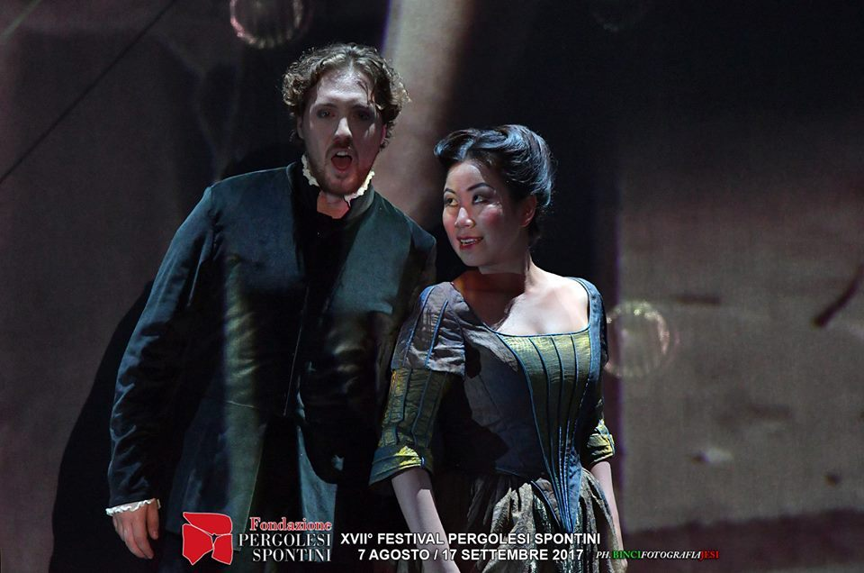
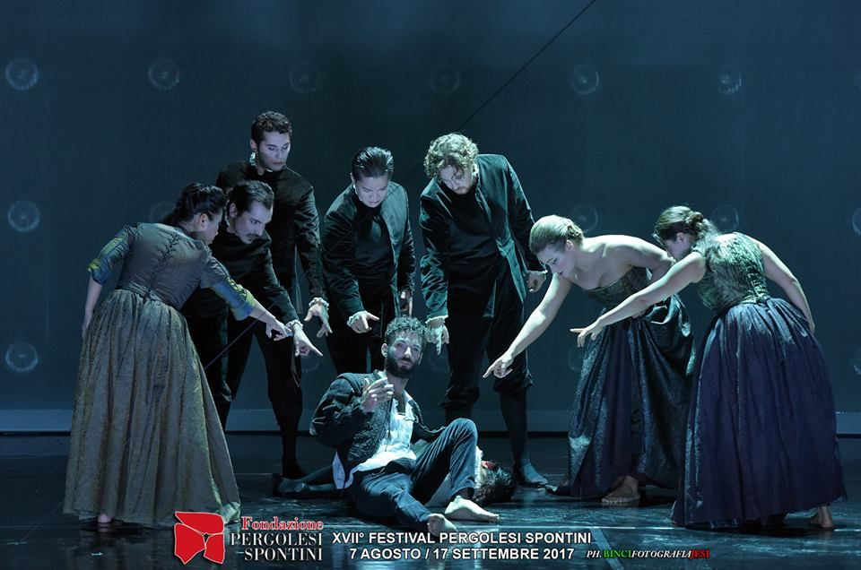
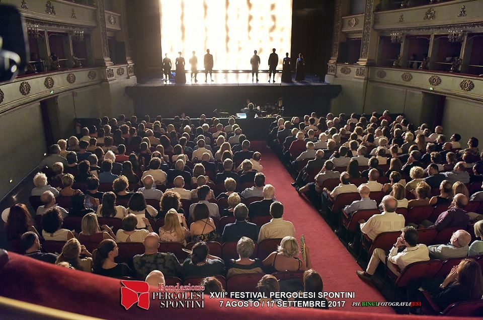
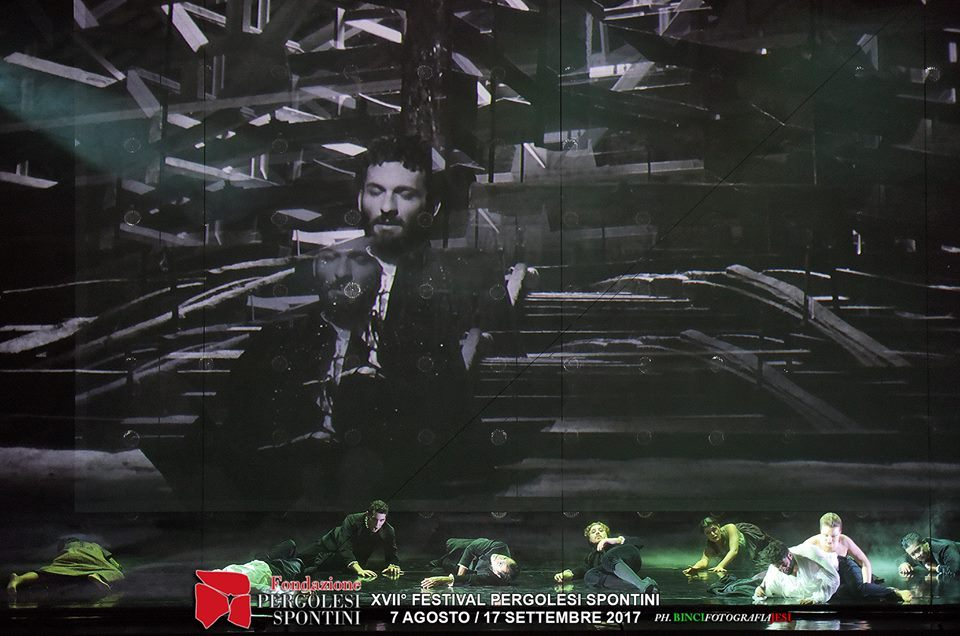
Foto — Teatro Pavarotti, Modena

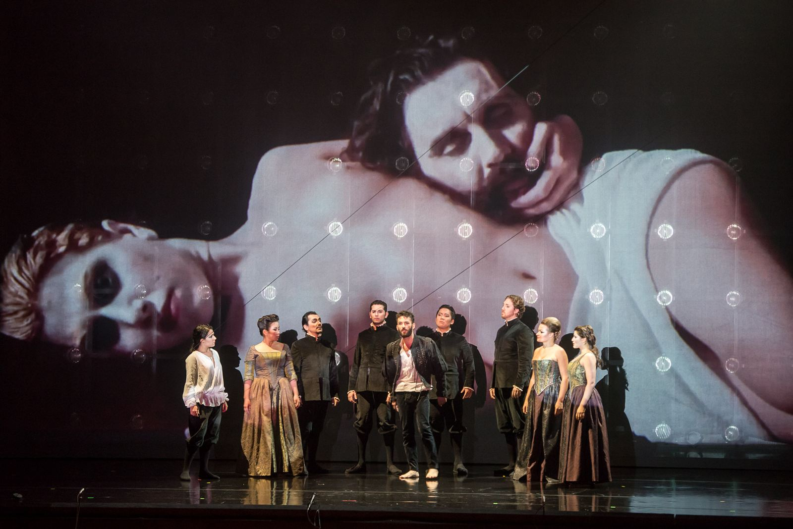
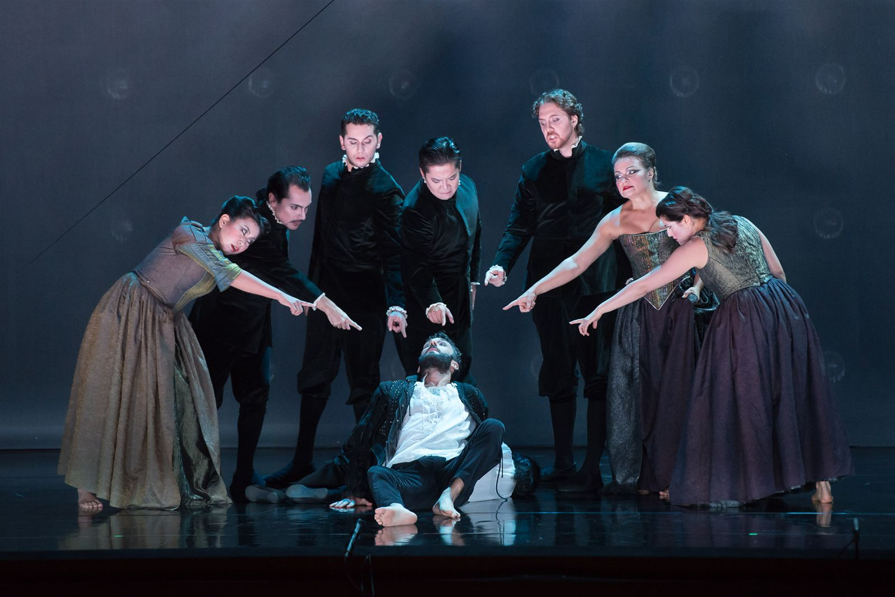
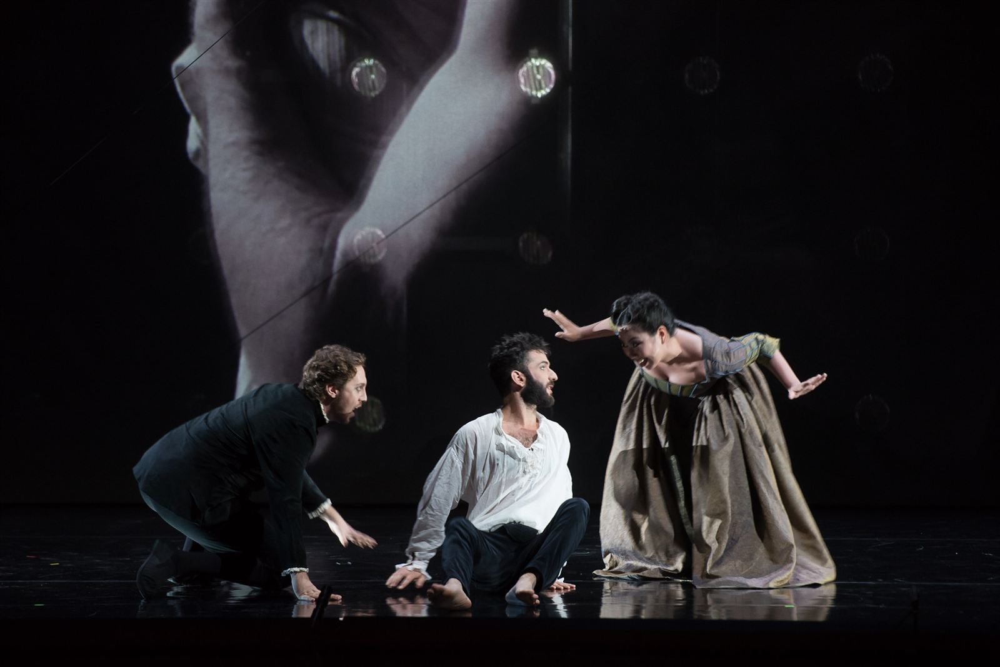
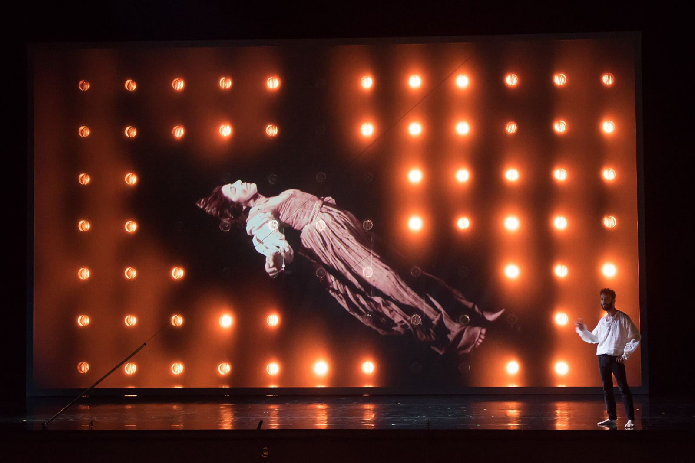
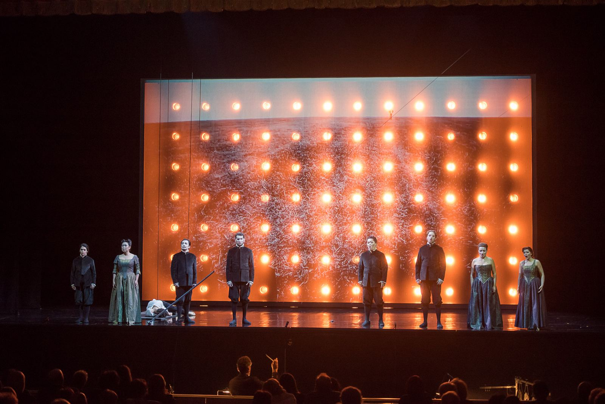
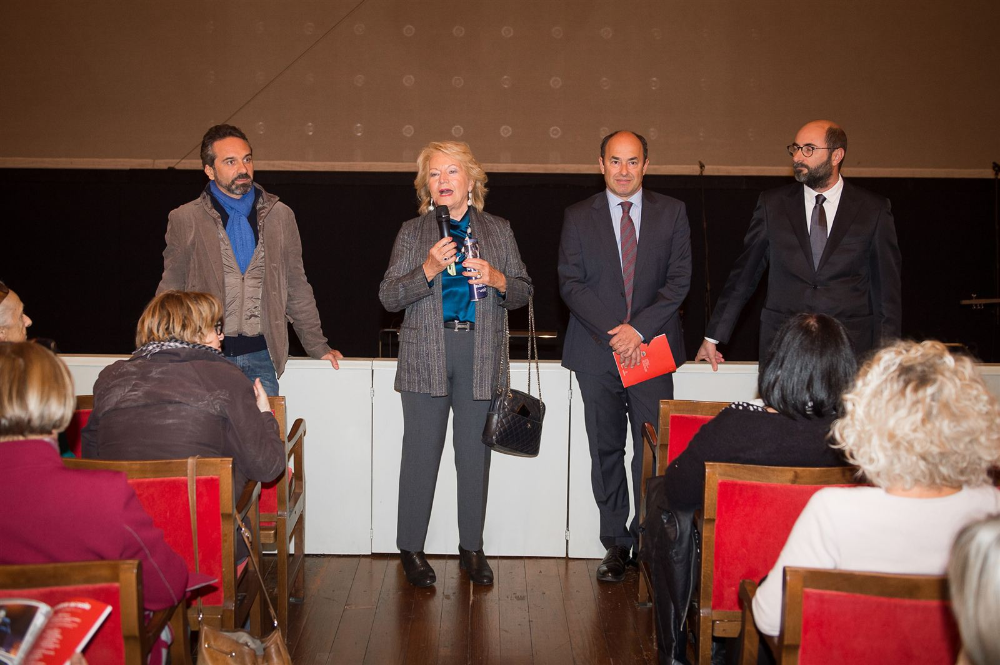
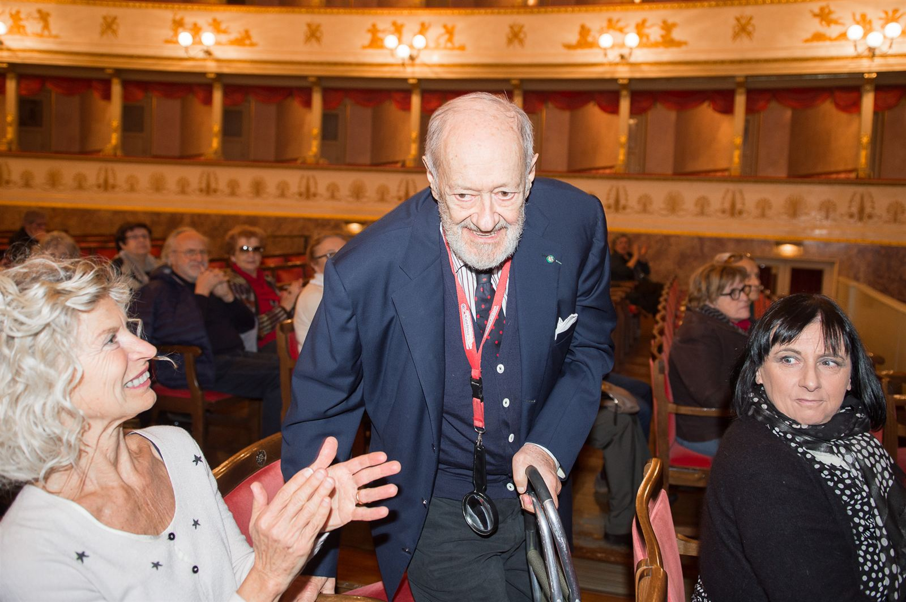
Video
Stampa
«Un plauso a Cristian Taraborrelli che ci guida nelle paure e nei meandri oscuri dei pensieri del pittore immaginato da Camilleri e l’ensemble strumentale di otto esecutori amplifica la suggestione permettendoci di percepire nettamente le sue ansie.» “A round of applause for Cristian Taraborrelli who guides us through the fears and dark recesses of the painter’s thoughts as imagined by Camilleri, while the instrumental ensemble of eight performers amplifies the atmosphere, allowing us to clearly perceive his anxieties.” «Bravo à Cristian Taraborrelli qui nous guide dans les peurs et les méandres obscurs des pensées du peintre imaginé par Camilleri, tandis que l’ensemble instrumental de huit interprètes amplifie l’atmosphère.»
— Claudio Barbieri · La Repubblica
«Non solo Montalbano — Jesi: Il colore del sole di Lucio Gregoretti da un romanzo di Andrea Camilleri.» “Not just Montalbano — Jesi: Il colore del sole by Lucio Gregoretti from a novel by Andrea Camilleri.” «Pas seulement Montalbano — Jesi : Il colore del sole de Lucio Gregoretti d’après un roman d’Andrea Camilleri.»
— Fabio Brisighella · L’Opera · ottobre 2017
Team Creativo
Curiosità
Camilleri e Caravaggio — Il romanzo di Camilleri (2007) si presenta come un falso documento ritrovato: il diario segreto di Michelangelo Merisi detto il Caravaggio, scritto durante la fuga tra Napoli, Malta, la Sicilia nel 1606-1608, fino alla sua misteriosa morte.
Camilleri and Caravaggio — Camilleri’s 2007 novel presents itself as a discovered document: the secret diary of Michelangelo Merisi known as Caravaggio, written during his flight between Naples, Malta and Sicily from 1606 to 1608, until his mysterious death.
Camilleri et Le Caravage — Le roman de Camilleri (2007) se présente comme un document retrouvé : le journal secret de Michelangelo Merisi dit Le Caravage, écrit durant sa fuite entre Naples, Malte et la Sicile de 1606 à 1608.
Lucio Gregoretti figlio d’arte — Il compositore Lucio Gregoretti è figlio del celebre regista Ugo Gregoretti. La partitura teatrale composta per Il Colore del Sole rielabora il linguaggio dell’arte contemporanea in chiave musicale.
Lucio Gregoretti, son of art — Composer Lucio Gregoretti is the son of the celebrated director Ugo Gregoretti. His theatrical score for Il Colore del Sole reinterprets the language of contemporary art through music.
Lucio Gregoretti, fils d’artiste — Le compositeur Lucio Gregoretti est le fils du célèbre réalisateur Ugo Gregoretti. Sa partition théâtrale pour Il Colore del Sole réinterprète le langage de l’art contemporain à travers la musique.
Da Jesi a Modena — Dopo il debutto al Festival Pergolesi Spontini di Jesi (settembre 2017), l’opera è andata in scena il 27 e 29 ottobre al Teatro Pavarotti di Modena.
From Jesi to Modena — After its premiere at the Festival Pergolesi Spontini in Jesi (September 2017), the opera was performed on October 27 and 29 at the Teatro Pavarotti in Modena.
De Jesi à Modène — Après sa création au Festival Pergolesi Spontini de Jesi (septembre 2017), l’opéra a été représenté les 27 et 29 octobre au Teatro Pavarotti de Modène.
Tags